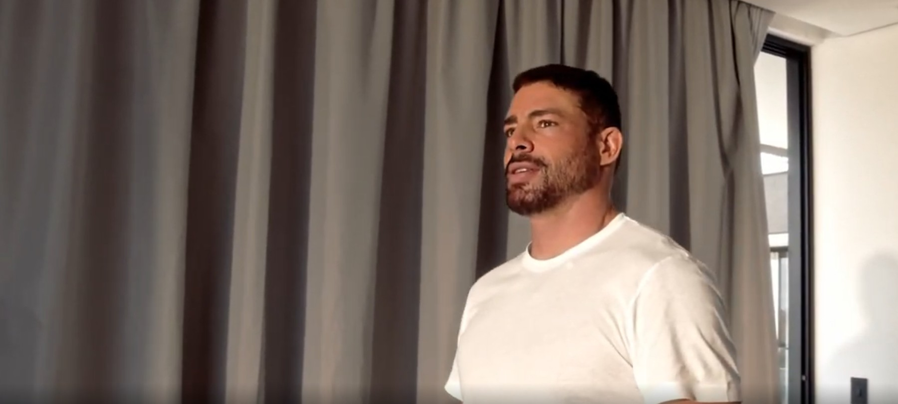
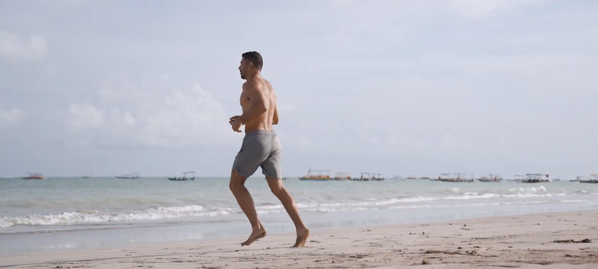

Uma busca pessoal que se transformou em um movimento.
Conheça a história de quem transformou a disciplina dos esportes, a busca por saúde e a paixão pela família em uma nova assinatura imobiliária para você.
Da carreira internacional ao topo da dramaturgia e produção audiovisual, Cauã Reymond sempre entendeu que o alto rendimento exige equilíbrio. A Biosphere é a materialização dessa filosofia: criar ambientes onde qualquer pessoa possa atingir seu potencial máximo com saúde, foco e alegria.
Antes de se tornar um dos atores mais reconhecidos de sua geração, Cauã trabalhou como modelo internacional e viveu em diferentes cidades do mundo. Em Nova York, sua aproximação com a interpretação ganhou força quando recebeu uma bolsa para estudar com Susan Batson, reconhecida preparadora de atores.
Sua presença pública está associada não apenas à atuação, mas também ao esporte, à saúde, à natureza, à paternidade, à disciplina e à busca por equilíbrio — os mesmos valores que agora orientam cada empreendimento Biosphere.
Cauã e a Biosphere
A Biosphere não nasceu de um personagem. Nasceu das escolhas, dos hábitos e das experiências reais de Cauã: a relação com o esporte, a busca por saúde e equilíbrio, o contato com a natureza, a importância da família, o interesse por arquitetura, design, comportamento e futuro.
Na Biosphere, esses valores deixam de ser apenas inspiração e passam a orientar decisões concretas — localização, áreas de convivência, estruturas esportivas, serviços, tecnologia, sustentabilidade e relação com a paisagem. Cada empreendimento interpreta essa visão de uma maneira própria, para que você viva por inteiro.
Na voz de Cauã
-

Meu objetivo é participar da criação de empreendimentos que levem em conta tudo o que mais valorizo.
Família, esporte, lazer, saúde, natureza, sustentabilidade e tecnologia. Para mim, Biosphere é isso. Meu habitat.